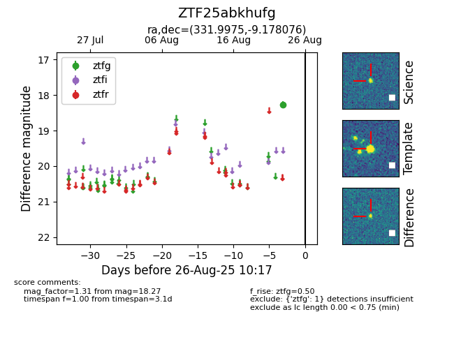

Target ZTF25abkhufg at 2025-08-26 11:10, see:
FINK: fink-portal.org/ZTF25abkhufg
Lasair: lasair-ztf.lsst.ac.uk/objects/ZTF25abkhufg
ALeRCE: alerce.online/object/ZTF25abkhufg
alt names
ZTF25abkhufg (ztf,fink)
coordinates:
equatorial (ra, dec) = (331.9975,-9.17808)
galactic (l, b) = (50.0149,-47.49349)
photometry
last ztfg=18.27
1 ztfg detections
